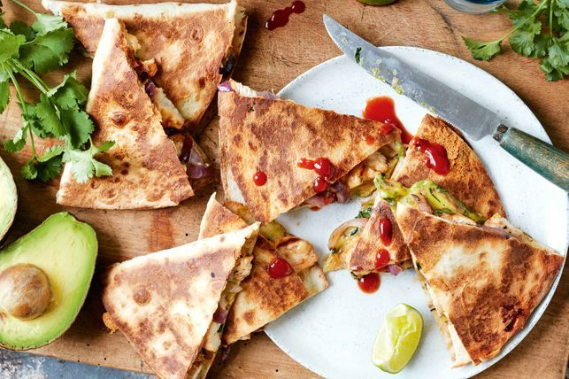

Barbecued chicken quesadillas

description:
Serve up a meal the whole family will enjoy with barbecued chicken quesadillas.
Ingredients:
- 1 cup (280g) tomato sauce
- 1/3 cup (80ml) white wine vinegar
- 2 tbsp brown sugar
- 1 1/2 tbsp Cholula hot sauce
- 1 tbsp Worcestershire sauce
- Chicken breast fillets, pounded to an even 2cm thickness
- 2 tbsp canola oil
- 1 small red onion, cut into 5mm slices keeping rings intact
- 4 flour tortillas
- 2 cups grated tasty cheese (from 240g)
- 1 avocado, halved, pitted, peeled, sliced
- 1/2 cup coriander leaves, roughly chopped
Instructions:
- Preheat the barbecue chargrill and hot plate on medium heat.
- In a medium bowl, whisk the tomato sauce, vinegar, sugar, hot sauce, Worcestershire, 1 tsp sea salt flakes and ½ tsp freshly ground black pepper. Reserve 1/3 cup (80ml) of the sauce for basting and set the remaining sauce aside.
- Brush the chicken with 2 teaspoons of oil and season with salt and pepper. Barbecue the chicken on the chargrill, basting with the reserved barbecue sauce, for 6 mins or until charred. Turn the chicken over and cook, basting the chicken with more barbecue sauce, for 6 mins or until the chicken is cooked through but still juicy. Transfer the chicken to a cutting board to rest for 5 mins. Dice the chicken into 1cm pieces and transfer to a large bowl. Add ½ cup (125ml) of the remaining barbecue sauce and toss to coat. Season the chicken mixture to taste with salt and pepper.
- Meanwhile, brush the onion with 2 teaspoons of oil and season with salt. Cook on the chargrill, turning as needed, for 12 mins or until charred and tender.
- Brush one side of the tortillas with 2 teaspoons of oil. Lay the tortillas, oiled-side down, on a work surface. Sprinkle ¼ cup of cheese over the bottom half of each tortilla and top with the charred onions. Divide the chicken mixture between the tortillas, then top with another ¼ cup of cheese. Top with the avocado slices and coriander. Fold the top half of the tortilla over the filling and press lightly to compact.
- Lightly brush the remaining oil over the barbecue hot plate. Working in batches, place the quesadillas on the hot plate and cook, flipping halfway through cooking, for 5 mins or until the tortillas are golden brown and the cheese has melted. Transfer the quesadillas to a cutting board. Cut each quesadilla into 4 wedges and serve with the remaining barbecue sauce.
Return To Home